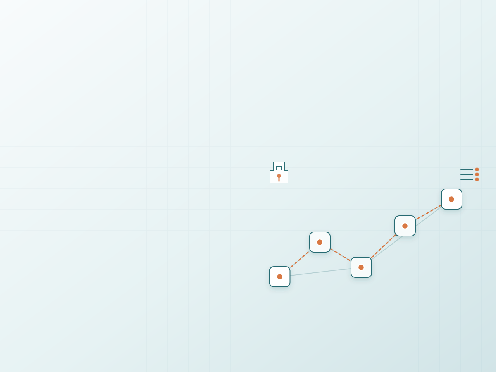
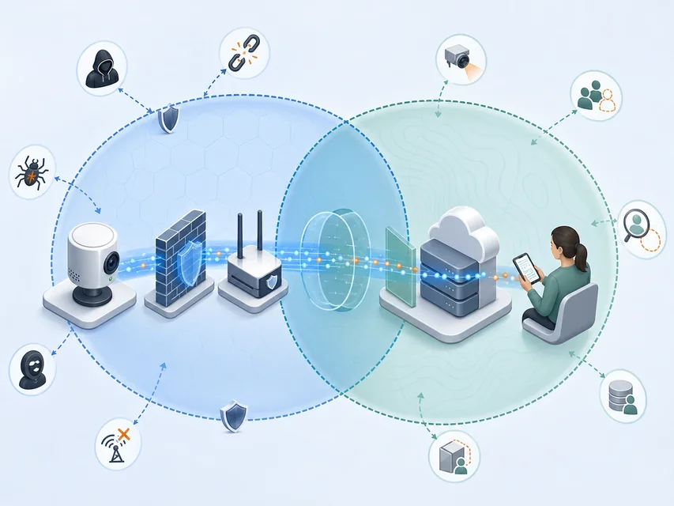
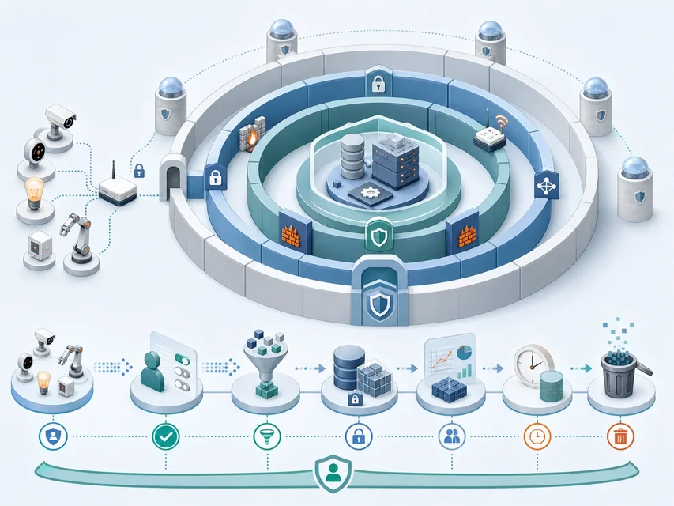

安全
保护设备、网络、数据和服务免受未经授权的访问、攻击、篡改、破坏或中断
关注系统能否可信运行

保护设备与服务，限制个人数据使用
 VER. 2608
Built with impress.js
VER. 2608
Built with impress.js
追踪攻击入口、保护措施，以及恢复服务与受理申诉的负责人
加密和认证之外，还要限制收集范围，保留用户选择
物理对象、设备／网络、数据／服务与人的生活相互影响
保护设备、网络、数据和服务免受未经授权的访问、攻击、篡改、破坏或中断
关注系统能否可信运行
保护自然人的私密空间、活动和信息，并让个人能控制收集、使用、公开与共享
关注个人数据用途

设备、网络、云、环境和人的操作会互相影响
传感器、标签、手机、网关、云服务与运维接口
设备受成本、体积、能耗与更新条件约束
数据、服务和控制可能影响交通、能源、健康与居家生活
可变路径示意：感知／标识 → 网络／计算 → 数据／决策 → 控制／行动
账号、网关或云端任何一处失守，都可能让错误指令到达设备；除了保护数据，还要准备拒绝指令、人工接管和安全停机
同一攻击可能同时破坏多个属性
未经授权的主体不能读取敏感信息
防止数据和指令被未授权修改或插入，保持其准确与完整
授权使用者在需要时能获得信息和服务
病历被未授权读取损害机密性，读数被未授权修改损害完整性；延迟、丢失或乱序可能影响数据新鲜性与可用性，需结合后果判断
| 场景 | 请判断问题类型 | 请写CIA属性或隐私影响 |
|---|---|---|
| 家用摄像头被接管，室内画面外传 | 填写 | 填写 |
| 位置被过度收集 | 填写 | 填写 |
| 控制指令被篡改 | 填写 | 填写 |
| 服务被压垮 | 填写 | 填写 |
先写谁在操作哪个设备或数据、原本用于什么、出事后影响谁，再选择认证、权限、加密、最小化或恢复措施
恶意固件可改设备并伪造数据；明确发现、回滚和更新的负责人
拆解、移动、篡改、弱口令、恶意固件和供应链
窃听、伪造、重放、拒绝服务、横向移动和云配置错误
业务逻辑缺陷、异常数据、控制链操纵和组合失效
分析威胁时，要写清攻击从哪里进入、可能读取或修改什么、让什么停止，以及怎样从日志或设备状态发现它
| 现象 | 请写 CIA 属性 | 请写后果、证据及隐私风险 |
|---|---|---|
| 越权读取健康记录 | 填写 | 填写 |
| 修改传感器读数 | 填写 | 填写 |
| 让门锁无法响应 | 填写 | 填写 |
| 伪造设备位置 | 填写 | 填写 |
安全分析要从“发生了什么”走到“谁因此失去什么能力”
不能只依赖登录密码；设备启动、通信、应用条件和运维监控都要各自检查
设备、通信和应用多处检查
运维持续监控与恢复；各阶段同时限制个人数据的使用

四组工作可同时发生，不必依次经过；运维人员持续更新、监控和恢复
防拆封装设备，用可信启动和固件签名检查软件来源，采用适合设备的密码算法并安装补丁
加密数据、保护密钥、核实身份、检查数据是否被改动，并限制访问、记录操作
检查业务规则和设备之间的关系，发现异常时阻止危险动作，并提供恢复办法
只授予必要权限，隔离网络并持续监控；先小范围更新，出错后恢复旧版本并处理事件
说明保护对象、检查方法与失效处理，再选择加密或认证等措施
用封装、可信启动、密钥保护、定位与远程锁定／清除降低物理风险
用加密、认证、完整性校验、隔离和审计保护传输与存储
信息隐藏或数字水印可以隐藏敏感内容的存在或标记来源，但不能代替加密和完整性校验
| 风险 | 写出保护措施 | 说明怎样检查措施是否有效 |
|---|---|---|
| 设备被拆解 | 填写 | 填写 |
| 弱口令登录 | 填写 | 填写 |
| 固件被替换 | 填写 | 填写 |
| 云端指令误发 | 填写 | 填写 |
模拟程序检查越权与重复命令；下载包中的 firmware-checks.csv 用于分析签名与安装记录
精确位置可关联身份；截获、共享与长期保留也会扩大暴露
撤回或删除时，还要核查缓存、备份和模型输入，并保留处理记录
限制传感器、阅读器、定位和健康模块的访问
加密数据、核实访问身份，并规定谁能读取、保存多久、怎样备份
限定分析用途，检查交给第三方计算时会暴露哪些原始数据和中间结果
决定身份、位置和时间保留多精细，再检查与其他记录的关联风险
区域推荐只需大致区域，导航才需实时位置；用户应知道用途、期限并能撤回
告诉用户为何采集，只申请必要权限，并提供关闭摄像头等物理开关
加密数据并保护密钥，核实访问者身份，检查数据是否被改动并记录访问
按用途隔离数据，隐藏敏感字段，限定计算过程和模型可读取的内容
按用途选择去标识化、匿名化、模糊或失真处理，规定保留期限，并提供撤回和删除办法
“服务需要数据”不是无限收集和长期保留的理由
| 用途 | 请写最小必要信息 | 请写保护措施 |
|---|---|---|
| 区域推荐 | 填写 | 填写 |
| 路线导航 | 填写 | 填写 |
| 紧急救援 | 填写 | 填写 |
| 长期分析 | 填写 | 填写 |
先说明用途，再决定位置和时间要记多精确、是否必须关联身份；不默认收集最细的数据
不汇集原始数据，也要防止密钥泄露或从更新、输出反推住户信息
对密文作特定运算，由持钥者解密结果
各方不公开原始输入，按协议联合计算约定结果
各方本地训练并交换受控更新，原始数据不直接汇出
以水务统计与漏水检测为例；以下均为教学设定，不展开密码算法
| 方法与任务 | 参与方交出什么 | 谁得到什么 |
|---|---|---|
| 同态加密 | 甲水务将每户用水量的密文交给云商 | 甲持钥解密云商返回的总量 |
| MPC | 甲乙丙各持超额用水户数12、18、20，交换协议保护消息 | 共同得到50户，不直接公开各方计数 |
| 联邦学习 | 站点本地训练漏水模型，向协调方发送参数变化 | 协调方聚合后下发模型；原始日志留在站点 |
要核对密钥、协议假设与身份；总量、更新和输出仍可能泄露信息
删掉姓名并不能自动证明数据已经匿名，精确轨迹仍可能暴露身份
| 方法 | 判别条件 | 不能直接推出什么 |
|---|---|---|
| 去标识化 | 不借助额外信息时，无法识别特定自然人 | 仍可能借助额外信息恢复关联 |
| 匿名化 | 无法识别特定自然人，且处理后不能复原 | 不能只凭删除姓名就宣布完成 |
| 模糊、失真或合成 | 降低精度、扰动或生成替代数据 | 仍要检查能否重新认出个人，以及处理后的数据是否还能用于分析 |
先写清发布目的，再决定删哪些字段、位置和时间保留多精确
| 拟发布字段 | 判断这些字段是否是完成用途所必需的 |
|---|---|
| P01编号、分钟级坐标与日期 | 去掉姓名后，还可能怎样与其他信息关联？ |
| 区域、日期、进入次数 | 足以展示区域趋势吗？小样本有何风险？ |
| 由原始记录生成的合成轨迹 | 能否仅凭“合成”就宣布匿名？ |
医疗案例强调监测接手；位置服务还需纠正过度收集、处理用户请求
设备控制、患者信息、医院网络和远程维护必须分层保护
精确位置支撑服务，同时可能暴露家庭、工作和行为规律
谁登录、能看什么、网络怎样隔离、数据是否加密、谁更新、谁接管、日志在哪、怎样恢复
案例评价要说明攻击是否被拦住、收集是否超过用途、服务中断后谁接管、用户何时获知并向谁申诉
合成事件：远程监测设备；时间均为10月13日 +08:00，不含真实患者数据
| 记录 / 时间 | 可观察的事实 | 责任方 |
|---|---|---|
| I01 / 10:03 | v1.5 最后正常上报 | 监测平台 |
| I02 / 10:04 | 超过60秒未收到心跳，平台告警 | 值班运维 |
| I03 / 10:05 | 护士确认已按预案接手监测 | 值班护士 |
| I04 / 10:08 | 已回滚v1.4；I05于10:09收到心跳 | 厂商与运维 |
| I06 / 10:10 | 测量对照与告警通路验证仍待完成 | 护士与运维 |
本例须补齐测量对照、告警通路与双方确认，才可结束人工接手
下载包给出固件与请求记录；逐项判断哪些结论已有支持
| 记录 | 已有事实 | 尚不能声称 |
|---|---|---|
| F01 / F02 | 改动包验签失败被拒；合法v1.5验签通过 | 通过验签就没有功能缺陷 |
| R01 | 服务中断通知已送达；提供服务台工单入口 | 已证明不存在数据泄露 |
| R02 | 用户删除请求：主库已处理，缓存与备份核查待办 | 所有副本均已删除 |
按已确认的身份查权限，再处理命令编号并记录结果
以 med-07 记录为依据，区分已完成动作、待补证据和后续负责人